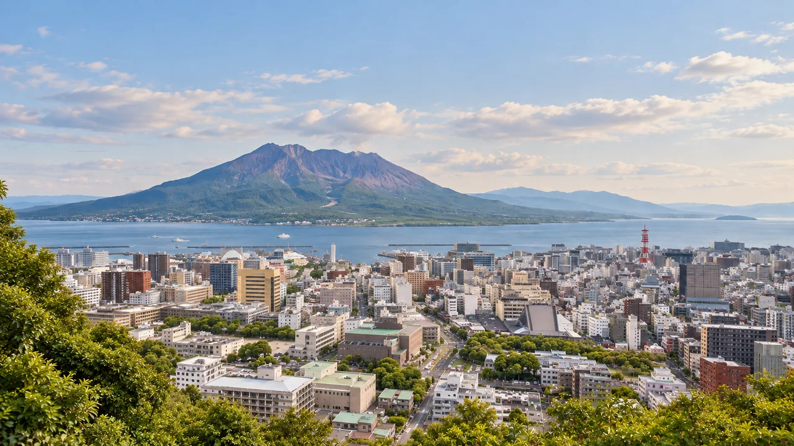
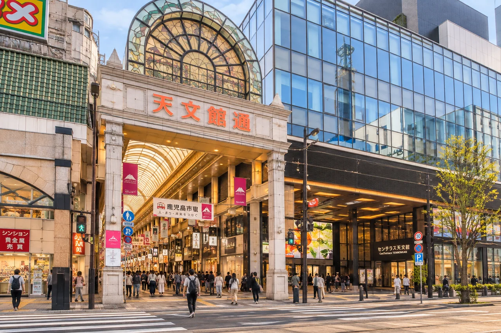
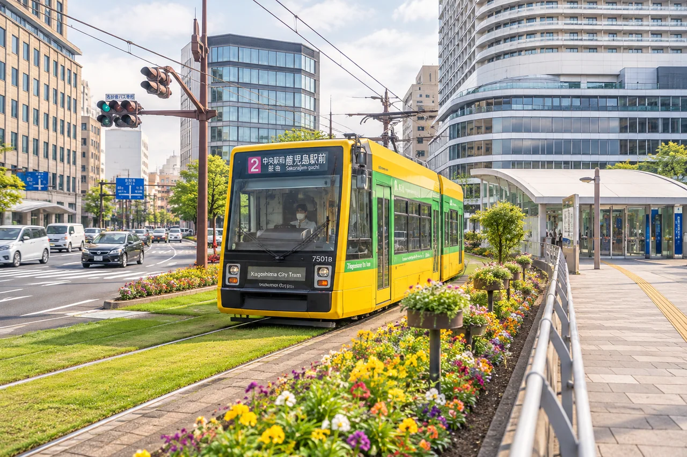

05:13 → 05:21
阪急塚口 → 十三
阪急神戸線

KAGOSHIMA
TRAVEL JOURNAL
2026.11.14（土）– 11.15（日）
桜島を望む、ふたりの旅へ。
Have a wonderful trip.

11/15｜2つの条件で、午後の旅を。
2つの条件を選んでください。

DAY 01 · 2026
当日用しおり H2｜時刻は交通のみ予定発→予定着
11/13と当日朝に、運休・臨時ダイヤ・飲食店営業を再確認。空港連絡バスは満席時に次便案内となる場合があります。
黒田 → 桜島 → むじゃき → ホテル休憩 → 福わらじ（20:00）
自宅最寄り → 伊丹空港
05:13 → 05:21
阪急神戸線
05:24 → 05:39
阪急宝塚線・宝塚方面
05:55 → 05:58
大阪モノレール
07:05 → 08:30
航空便（予約便）
鹿児島空港 → とんかつ黒田
09:00 → 09:38頃
空港連絡バス・直行便（CUTE対象外）
大人1,500円／人。道路状況・満席に注意。
09:38 → 09:45頃
ソラリア西鉄ホテル鹿児島
到着後そのまま荷物を預け、黒田へ向かう。
09:45頃 → 09:55頃
徒歩・約5〜10分の目安
駅から公式徒歩5分。ホテル館内移動を含め10分で計画。
09:55頃 → 11:00
予約不可・11:00開店
早めに並ぶ。入店・提供時刻は確約ではありません。
11:00 → 12:10頃
退店目標12:10
⚠ 13:00フェリーを優先。12:20を過ぎても退店できない場合は乗継を再確認。提供・退店時刻は保証されません。
桜島 → 天文館むじゃき
12:10頃 → 12:15頃
徒歩・約5分
12:15頃 → 12:18
鹿児島駅前方面・2系統
12:18 → 12:30頃
市電2系統・鹿児島駅前方面
土曜の12:18発。到着は所要時間からの目安。
12:30頃 → 12:42頃
徒歩・約10〜12分
移動・信号待ちを含む目安。
12:42頃 → 13:00
鹿児島港発・11/14ドックダイヤ
⚠ 13:00を逃すと13:30アイランドビューに接続しません。次の13:20発以降と現地案内を確認し、観光の短縮・一部省略を判断。自動再計算はしません。
13:00 → 13:15頃
桜島フェリー・11/14ドックダイヤ
乗船約15分、下船に2〜3分。海況で約20分となる場合あり。
13:18頃 → 13:30
下船・バス停移動を含む余裕約12分
13:30 → 13:36
サクラジマアイランドビュー
公式PDF9便。
13:36 → 14:00頃
見学
次のバスに遅れないよう、14:00頃には乗り場へ。
14:00頃 → 14:06
サクラジマアイランドビュー・10便
14:06 → 14:40頃
サクラジマアイランドビュー
PDFの湯之平14:40は途中停車を含む通過・発時刻。到着は目安で、見学後は15:10発に乗車。
14:40頃 → 15:05頃
見学・写真
長い山道を歩かず、15:10発のバスで戻る。
15:05頃 → 15:10
サクラジマアイランドビュー・11便
15:10 → 15:25
サクラジマアイランドビュー
フェリー15:45発まで20分。
15:25 → 15:45
11/14ドックダイヤ・桜島港発
15:45 → 16:00頃
桜島フェリー・11/14ドックダイヤ
下船に2〜3分を見込む。
16:03頃 → 16:15頃
徒歩・約10〜12分
16:15頃 → 16:23
2系統・鹿児島中央駅前／郡元方面
16:23 → 16:31頃
市電2系統・郡元方面
土曜16:23発。到着は目安。
16:31頃 → 16:36頃
徒歩・約5分
16:36頃 → 17:10頃
本店1F・白熊菓琲
11:00〜19:00、白熊・ドリンクL.O.18:30。混雑時はホテル休憩を優先して滞在調整。
ホテル休憩 → 福わらじ
17:10頃 → 17:15頃
徒歩・約5分
17:15頃 → 17:18
2系統・郡元方面
17:18 → 17:30頃
市電2系統・郡元方面
到着は目安。遅れた場合は17:25発など次便を確認。
17:30頃 → 17:35頃
徒歩・約5分
17:35頃 → 19:10頃
ソラリア西鉄ホテル鹿児島
体調を優先。福わらじ20:00予約、19:40〜19:50頃到着を目指す。
19:10頃 → 19:15頃
徒歩・約5分
19:15頃 → 19:24
2系統・鹿児島駅前方面
19:24 → 19:29頃
市電2系統・鹿児島駅前方面
土曜19:24発。到着は約5分の目安。
19:29頃 → 19:44頃
徒歩・公式約10分、余裕を見て15分
19:44頃 → 20:00
20:00・2名予約確定
20:00
2名予約確定・終了時刻未定
営業時間17:30〜22:00（L.O.21:00）。日曜定休、訪問は土曜。
夕食後の帰路
末よし → 西郷隆盛銅像 → 城山／維新ふるさと館 → ラーメン → 空港
共通工程｜ホテル → 末よし
08:45頃 → 09:00頃
ソラリア西鉄ホテル鹿児島
荷物は夕方までホテルへ。
09:00頃 → 09:05頃
徒歩・約5分
09:05頃 → 09:12
日曜ダイヤ・2系統鹿児島駅前方面
09:12 → 09:22頃
市電2系統・鹿児島駅前方面
到着は目安。
09:22頃 → 09:27頃
徒歩・約5分
09:27頃 → 10:30
開店待ち・約1時間
10:30 → 11:15／11:45頃
退店時刻に合わせてルートを選択
2条件を選ぶと、4パターンのうち1コースを表示します。
2条件を選んでください。
11:15頃 → 11:30頃
徒歩・約15分
11:30頃 → 11:40頃
見学・写真
11:40頃 → 11:44
中央公園側・城山方面
乗り場移動約4分。遅れた場合は次の30分後の便と滞在時間を確認。
11:44 → 11:54
カゴシマシティビュー・城山方面
11:54 → 12:19頃
平坦な展望台周辺・山道の登下山はしない
バス停と展望台の往復を含む目安。発車5分前には乗り場へ。
12:19頃 → 12:24
仙巌園方面へ下山する便
12:24 → 12:29
カゴシマシティビュー・仙巌園方面（下山）
西郷洞窟前を経由し、仙巌園方面側の薩摩義士碑前で下車。長い山道は歩かない。
12:29 → 12:44頃
徒歩約10〜15分・市街地へ
停留所の方向と横断歩道を確認。所要時間は目安。
12:44頃 → 12:52
2系統・鹿児島中央駅前／郡元方面
12:52 → 13:08頃
市電2系統・郡元方面
日祝の発時刻を確認。到着は約16分の目安。
13:08頃 → 13:15頃
中央駅周辺の既存4候補から当日選択
店舗によって徒歩所要時間が変わる。
13:15頃 → 14:10頃
店舗未確定・候補一覧から選択
14:00を過ぎても未着席、または待ち時間が長い場合は省略を判断。14:40にはホテルへ向かう。
14:10頃 → 14:40頃
余裕がある場合のみ
体調と15:25空港バスを優先。観光先の追加はしない。
11:45頃 → 12:00頃
徒歩・約15分
12:00頃 → 12:10頃
見学・写真
12:10頃 → 12:14
中央公園側・城山方面
乗り場移動約4分。遅れた場合は次の30分後の便と滞在時間を確認。
12:14 → 12:24
カゴシマシティビュー・城山方面
12:24 → 12:49頃
平坦な展望台周辺・山道の登下山はしない
バス停と展望台の往復を含む目安。発車5分前には乗り場へ。
12:49頃 → 12:54
仙巌園方面へ下山する便
12:54 → 12:59
カゴシマシティビュー・仙巌園方面（下山）
西郷洞窟前を経由し、仙巌園方面側の薩摩義士碑前で下車。長い山道は歩かない。
12:59 → 13:14頃
徒歩約10〜15分・市街地へ
停留所の方向と横断歩道を確認。所要時間は目安。
13:14頃 → 13:20
2系統・鹿児島中央駅前／郡元方面
13:20 → 13:36頃
市電2系統・郡元方面
日祝の発時刻を確認。到着は約16分の目安。
13:36頃 → 13:45頃
中央駅周辺の既存4候補から当日選択
店舗によって徒歩所要時間が変わる。
13:45頃 → 14:30頃
店舗未確定・候補一覧から選択
14:00を過ぎても未着席、または待ち時間が長い場合は省略を判断。14:40にはホテルへ向かう。
14:30頃 → 14:40頃
余裕がある場合のみ
体調と15:25空港バスを優先。観光先の追加はしない。
11:15頃 → 11:30頃
徒歩・約15分
11:30頃 → 11:40頃
見学・写真
11:40頃 → 11:50頃
徒歩・約10分
11:50頃 → 11:57
2系統・郡元方面
11:57 → 12:05頃
市電2系統・鹿児島中央駅前／郡元方面
日祝の発時刻。到着は約8分の目安。
12:05頃 → 12:15頃
徒歩約10〜12分
12:15頃 → 13:15頃
屋内見学・座って休憩しながら
9:00〜17:00（最終入館16:30）。市外の大人600円／人。臨時休館は11/24からのため11/15は対象外。CUTE付属割引等は受付で確認。
13:15頃 → 13:25頃
中央駅周辺へ徒歩・約10分
公式案内は中央駅から館まで徒歩8分。店舗により変動。
13:25頃 → 14:10頃
店舗未確定・既存4候補から当日選択
14:00を過ぎても未着席、または待ち時間が長い場合は省略を判断。14:40にはホテルへ向かう。
14:10頃 → 14:40頃
余裕がある場合のみ
体調と15:25空港バスを優先。
11:45頃 → 12:00頃
徒歩・約15分
12:00頃 → 12:10頃
見学・写真
12:10頃 → 12:20頃
徒歩・約10分
12:20頃 → 12:25
2系統・郡元方面
12:25 → 12:33頃
市電2系統・鹿児島中央駅前／郡元方面
日祝の発時刻。到着は約8分の目安。
12:33頃 → 12:45頃
徒歩約10〜12分
12:45頃 → 13:40頃
屋内見学・座って休憩しながら
9:00〜17:00（最終入館16:30）。市外の大人600円／人。臨時休館は11/24からのため11/15は対象外。CUTE付属割引等は受付で確認。
13:40頃 → 13:50頃
中央駅周辺へ徒歩・約10分
公式案内は中央駅から館まで徒歩8分。店舗により変動。
13:50頃 → 14:30頃
店舗未確定・既存4候補から当日選択
14:00を過ぎても未着席、または待ち時間が長い場合は省略を判断。14:40にはホテルへ向かう。
14:30頃 → 14:40頃
余裕がある場合のみ
体調と15:25空港バスを優先。
共通帰路｜ホテル → 鹿児島空港
17:40 → 18:55
予約済み航空便（CUTE対象外）
搭乗手続・保安検査の締切は航空会社の案内を優先。
鹿児島中央駅周辺に限定。店は当日選択。11/15（日）の個別営業・ラストオーダーは、臨時変更の可能性があるため11/13に公式案内・電話で最終確認。
鹿児島市中央町1-1 グルメ横丁。公式ページでは営業時間・L.O.の掲載を確認できないため要確認。
鹿児島市中央町3-3 神宮ビル1F。公式店舗案内の営業時間は11:00〜24:00。L.O.は掲載を確認できないため要確認。
鹿児島市中央町2-8。日曜の通常昼営業は11:00〜15:00（火曜定休）。L.O.は公式掲載を確認できないため要確認。
鹿児島市中央町1-1・アミュプラザ鹿児島 味の小径B1F。鹿児島の麦味噌を扱う味噌ラーメンで、一般的な鹿児島豚骨系とは異なる。店舗公式ページは個別の営業時間・L.O.未掲載のため要確認。
モバイルCUTE 2日券：大人2,100円／人、夫婦2人で4,200円。利用方針は確定、購入状況は未確認です。市電・市バス・カゴシマシティビュー・サクラジマアイランドビュー・桜島フェリーが対象です。
デジタル購入にはインターネット接続が必要。購入後の変更・払戻しはできません。空港連絡バス、阪急、大阪モノレール、航空便、徒歩は対象外です。
両日の全コースの完了履歴を解除します。日付・コース選択と費用は維持します。次回起動時は11/14の最初から再開します。
PWA V1.5 FIX2。初回のオンライン読み込み後は旅程をオフラインで閲覧できます。外部の地図・時刻表・公式サイトの閲覧には通信が必要です。
夫婦2人分の合計を日本円・0以上の整数で入力してください。空欄は未入力、0円は入力済みとして扱います。
この端末内に保存されます。費用入力の正本はXiaomi 15T Proです。端末間の自動同期はありません。